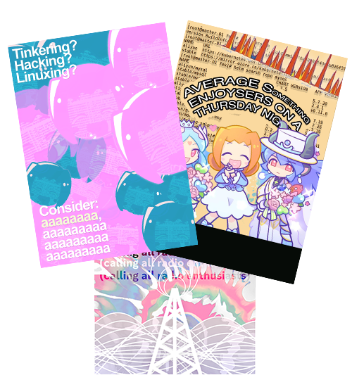

in 2024 i conduced a nearly year long effort to investigate and record myself crashing every zelda game with glitches. its a series i very much enjoy, and have spent years speedrunning and researching, and hoped i could find ways to poke holes in every entry to have a clickbaity, exciting, extravagant claim to made, (and succeeded).
i spent all of 2024 making friends and breaking these games, and it was very cool to be autism about zelda for a year and have it be a successful cool thing that also made me rent money!!
read more
it also featured to a trip to, literally, target, as the project was as comprehensive as i could , and as of 2024, major stores ARE carrying a vulnerable build of breath of the wild you can crash
i do promotion for local groups and make posters!!

in 2024 i got into making posters for local groups and also got into designing for bands as well. unfortunately the text on some of the posters got a little scrambled when i uploaded it to this site...
@kalekale 10/29/2022, 5:29pm
the past
ive made a game in 2021 which is basically a massive mod on top of other GBA games, which you can check out here
i've given talks in pax over my research into the famicom/nes and it's rich history outside of official circles
and i've performed speedruns of zeldas live in person after honing my craft and trying to be the best in the world